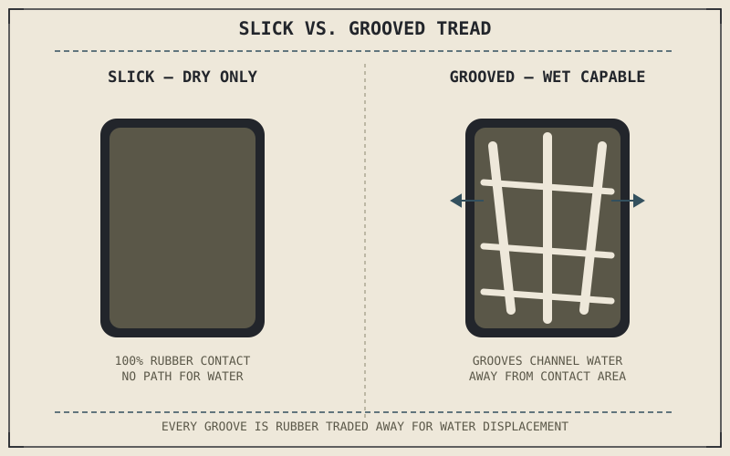

A slick racing tyre with no tread pattern at all generates more dry-weather grip than any road tyre ever will, for a reason that sounds backward until it's explained: every groove cut into a tread pattern is rubber deliberately removed from the contact patch, trading away dry grip for the ability to handle water and debris a slick simply cannot survive. Tread pattern is a compromise, not a pure improvement, and the same is true of compound choice sitting right alongside it.
Chapter 6.5 closed by naming tread and compound as the next variables shaping what the contact patch can actually do. This chapter covers both, and the trade-offs built into each.
What Tread Grooves Are Actually For
A tread pattern's grooves exist almost entirely to manage water. On a wet road, a tyre has to displace the water sitting between the rubber and the road surface fast enough that the rubber can make direct contact rather than riding on a thin film of water it can't push aside — a failure mode called hydroplaning. Grooves channel that water away from the contact patch and off to the sides, and a tyre's wet-weather capability is set largely by how much groove volume it has and how efficiently that pattern moves water at speed. A completely smooth slick has nowhere for water to go, which is exactly why slicks are a dry-conditions-only tyre despite offering the most contact area and grip available on a dry track.
Every groove cut into a tread pattern is contact-patch rubber deliberately sacrificed in exchange for the ability to displace water. A slick tyre has the most dry grip precisely because it has no grooves giving any of that contact area away.

A slick tyre with no tread grooves shown maximizing dry contact area, next to a grooved wet-weather tyre shown channeling water away from the contact patch through its tread pattern.
Compound: Trading Grip Against Durability
Rubber compound is a second, largely independent trade-off layered on top of tread pattern. Softer compounds deform more easily into microscopic road surface irregularities, generating more mechanical interlocking and more grip through the friction mechanisms Chapter 6.4 described — but that same softness means the compound wears away faster under the same use. Harder compounds resist deformation, wear far more slowly, and last many times longer, at the direct cost of generating less grip in any given condition. This is why a track-day tyre and a touring tyre can look nearly identical yet behave completely differently: the track tyre trades tyre life for lap-time grip, and the touring tyre trades outright grip for a tyre that survives thousands of kilometers.
Many sportbike tyres split this trade-off across the tyre's own surface, using a harder compound down the center — where the tyre spends most of its life riding upright, especially on the highway — and a softer compound toward the shoulders, where the contact patch migrates under hard cornering lean, a pattern Chapter 6.3 already flagged. That construction gives reasonable center-tread durability for everyday riding while still delivering maximum grip exactly where hard cornering actually asks for it.
A Common Misconception, Cleared Up Early
It's easy to assume a more aggressive-looking tread pattern, with deep, wide grooves, is simply a better or more capable tyre. Groove depth and volume are a wet-weather and off-road specification, not a general performance one — a tyre optimized for water displacement or loose-surface grip sacrifices dry-pavement contact area to get there, the same trade-off a slick makes in the opposite direction. The "best" tread pattern and the "best" compound are both entirely dependent on the conditions and riding this specific tyre needs to handle, echoing the same lesson Chapter 5.10 already established about suspension setup: there's no universally superior choice, only a choice matched correctly to its actual use.
Where This Leads
Tread and compound explain how a tyre is designed to grip, but a worn tyre no longer behaves the way its original design intended. Chapter 6.7 turns to reading tyre wear directly — what different wear patterns actually reveal about riding style, alignment, and pressure history.
Key Concepts to Remember
- Tread grooves exist primarily to displace water and prevent hydroplaning, trading away dry-condition contact area to gain wet-weather capability.
- Softer rubber compounds generate more grip through deeper mechanical interlocking but wear faster; harder compounds last longer at the cost of grip.
- Many sportbike tyres use a harder center compound for everyday durability and a softer shoulder compound for grip exactly where the contact patch migrates under cornering lean.
- There's no universally superior tread or compound — each is a correct choice only relative to the specific conditions and riding it needs to handle.
Cross-References
| ← Ch. 6.4 | Explained mechanical interlocking and adhesion as the sources of grip; this chapter shows how compound softness directly affects both mechanisms. |
| ← Ch. 6.3 | Flagged that sportbike tyres use different compounds at center and shoulder to match contact patch migration under lean; this chapter delivers that full explanation. |
| ← Ch. 5.10 | Established that suspension setup has no universally correct answer, only one matched to specific riding; this chapter applies the identical logic to tread and compound choice. |
| → Ch. 6.7 | Covers reading tyre wear patterns and what they reveal about riding style, alignment, and pressure history. |